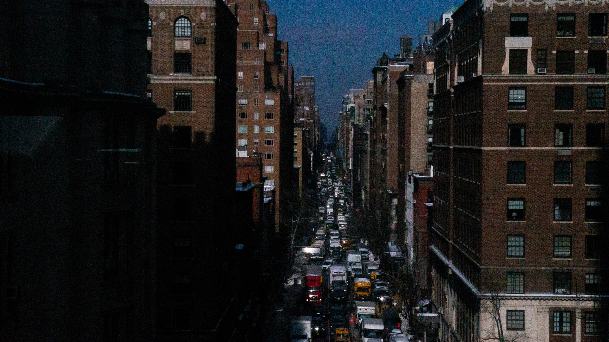

This image, I really like because it’s your classical one point perspective type of image. Everything converges to the vanishing point right in the middle where the road runs through with a row of buildings on each side. I think I was going for a cinematic composed shot where the graininess of the pixels make it feel like it was taken on an older camera. I really like how the colors turned out where the sides are darker toned from the shadow of the building and going toward the middle is very bright. The blue sky also really stands out with a beautiful blue gradient. I don’t think you can notice it but this was taken with the window glass, like it’s not out in the open so I’m happy the glass didn't mess the picture up somehow.